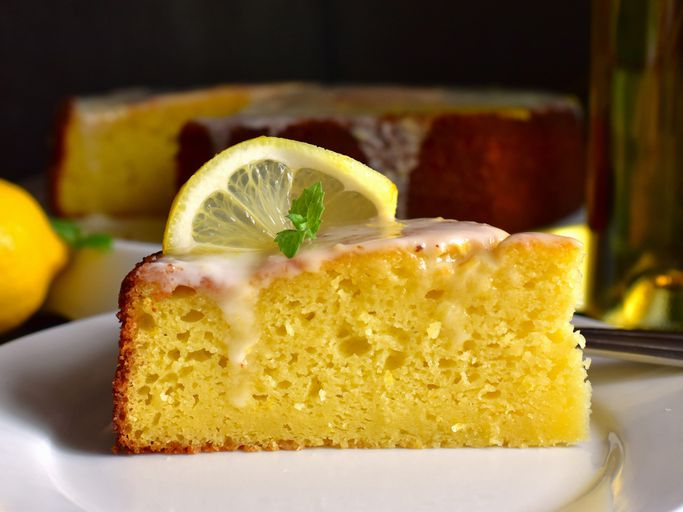

Limoncello and Ricotta Cake

Description
Indulge in the delightful flavors of Italy with this Limoncello Ricotta Cake. This moist and zesty dessert combines the creamy richness of ricotta cheese with the bright and refreshing taste of limoncello liqueur. Topped with a tangy lemon glaze, this cake is a burst of citrusy goodness that will transport your taste buds to the sunny shores of Italy.
Ingredients
Cake
- 1 1/2 Cups Cake Flour
- 1 tsp Baking Powder
- 1/2 tsp Baking Soda
- 1/2 tsp Salt
- 3 Large Eggs, Room Temperature
- 1 Cup White Sugar
- 15 Ounces Whole Milk Ricotta Cheese, Room Temperature
- 1/2 Cup Olive Oil
- 1/4 Cup Limoncello
- 2 Tbsp Fresh Lemon Zest
- 2 Tbsp Fresh Lemon Juice
- 1 tsp Vanilla Extract
Icing
- 1 Cup Powdered Sugar
- 3 Tbsp Limoncello
- 1 Tbsp Heavy Cream
- 2 tsp Fresh Lemon Juice
- 1/2 tsp Fresh Lemon Zest
- 1 Pinch Salt
Steps
- Preheat the oven to 350 degrees F (180 degrees C). Spray a 9-inch springform pan with a baking spray containing flour.
- Sift together cake flour, baking powder, baking soda, and 1/2 teaspoon salt. Set aside.
- In a large bowl, beat together eggs and sugar on medium-high speed until mixture has lightened in color and tripled in volume, 5 to 7 minutes. Mix in ricotta, olive oil, 1/4 cup limoncello, 2 tablespoons lemon zest, 2 tablespoons lemon juice, and vanilla until combined.
- Pour in half of the flour mixture and mix until just combined. Add in remaining flour mixture and mix until just combined. Pour cake batter evenly into the prepared springform pan, then place the springform onto a baking sheet.
- Bake in the preheated oven until a toothpick inserted into the center comes out with a few moist crumbs, 65 to 75 minutes. Cool cake in the pan for 30 minutes before removing to a wire rack to cool completely.
- To make icing, mix together powdered sugar, 3 tablespoons limoncello, heavy cream, 2 teaspoons lemon juice, 1/2 teaspoon lemon zest, and pinch of salt until completely smooth and combined. Pour icing over cooled cake.
Main Page
Original Recipe